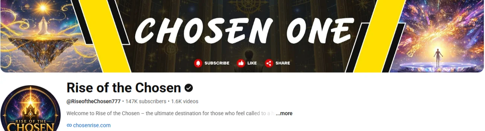

YouTube · Channel strategy
Rise of the Chosen
I managed this channel's content strategy end to end: what to post, how to package it, and how to hook viewers in the first seconds. Every subscriber came organically, with no paid promotion.
- Topic research
- Competitor analysis
- Thumbnails
- A/B title testing
- Hook & script writing
- Upload planning
- SEO
Subscribers
Average views per video
42× subscribers · 7–10× views per video · multiple viral videos
